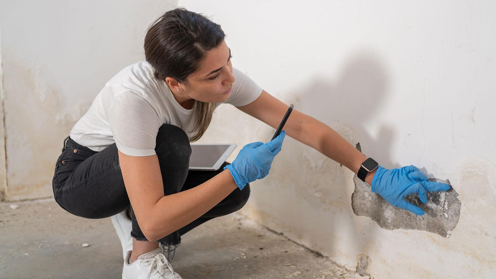

Understand the Concern
We begin with what you've observed, relevant building history, known water events, and available information.
Mold Investigations
Visible growth, staining, unusual odors, water intrusion, or persistent moisture can all raise questions about conditions inside a building.
A mold investigation looks beyond the visible symptom to understand the conditions surrounding it—helping establish what's happening, what may be contributing to it, and what should happen next.

Start With the Condition
Finding mold tells us something important.
But it doesn't necessarily tell us why it's there.
Water intrusion, elevated humidity, condensation, plumbing failures, building-envelope conditions, and previous water events can all contribute to environments where mold growth occurs.
Finding mold isn't the end of the investigation. Understanding why it's there is what makes the findings useful.
Not sure what you're looking at?
Tell us what you've observed, where you're seeing it, and anything you know about the building or its recent history. We'll help determine an appropriate next step.
The IES Approach
An effective investigation begins with the concern—not a predetermined testing plan. The questions surrounding the condition help focus the investigation on what matters.
We begin with what you've observed, relevant building history, known water events, and available information.
Affected and surrounding areas are evaluated for visible conditions, moisture indicators, and other relevant observations.
Environmental measurements and representative samples may be collected when they can help answer a specific question.
Observations, measurements, laboratory results when applicable, and building conditions are considered together to help explain what's happening.
What We Look At
Depending on the concern, an investigation may consider:
Discoloration, suspected microbial growth, staining, damaged materials, and other observable conditions.
Material moisture, signs of water intrusion, plumbing-related conditions, and evidence of current or previous wetting.
Environmental conditions that may contribute to condensation, elevated moisture, or microbial growth.
Air movement, exterior interfaces, mechanical systems, and building characteristics relevant to the concern.
Previous leaks, flooding, repairs, renovations, recurring conditions, and other information that may help explain what is observed today.
Every investigation is different. The appropriate observations, measurements, and sampling strategy depend on the building and the question we're trying to answer.
Sampling With a Purpose
Mold investigations are sometimes reduced to collecting a sample and waiting for a laboratory report.
But laboratory data is most useful when it's considered alongside the conditions observed in the building.
Depending on the investigation, surface or air samples may help characterize a material or environmental condition. In other situations, field observations and moisture-related findings may provide the information needed to understand the problem.
From Symptom to Source
If mold growth is present, addressing the visible material without understanding the moisture condition can leave the underlying problem unresolved.
Where?
When?
What?
How Far?
What Next?
The goal isn't simply to document what grew. It's to understand the conditions that allowed it to grow.
What You Receive
An IES mold investigation is designed to bring the available information together into a clear explanation of the conditions evaluated and what was found.
The concern evaluated and areas included in the investigation.
Relevant visible conditions, building characteristics, and environmental observations.
Measurements collected to help characterize conditions within the building.
Images providing useful context for observed conditions and areas of concern.
Analytical results when sampling is appropriate to the investigation.
A clear explanation of the findings and practical information for determining appropriate next steps.
When an Investigation May Be Useful
Discoloration or material conditions raise questions about possible microbial growth.
An odor persists even when an obvious source isn't visible.
A roof, plumbing, exterior, or other water event has affected building materials.
Condensation, elevated humidity, or damp materials continue to appear.
Additional information is needed to understand conditions following corrective work.
Something about an area warrants further investigation even though the source isn't immediately apparent.
After the Investigation
Sometimes an investigation identifies a localized moisture-related condition.
Sometimes the evidence points toward a broader building issue.
And sometimes observations or laboratory results help rule out one suspected explanation and direct attention somewhere else.
Whatever the outcome, the purpose is the same: bring the available evidence together into a clearer understanding of the condition.
We're not looking for the answer we expect.
We're following the evidence to the answer it supports.
Start a Conversation
You don't need to diagnose the building before contacting us. Tell us what you've noticed, where it's happening, and anything you know about the property's history. We'll help determine an appropriate next step.
Request a ConsultationNorth Carolina and Beyond
Continue Learning
Why visible mold is often only one part of understanding a moisture-related building condition.